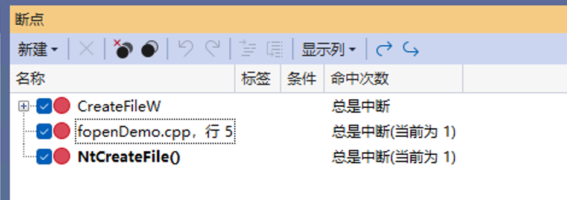
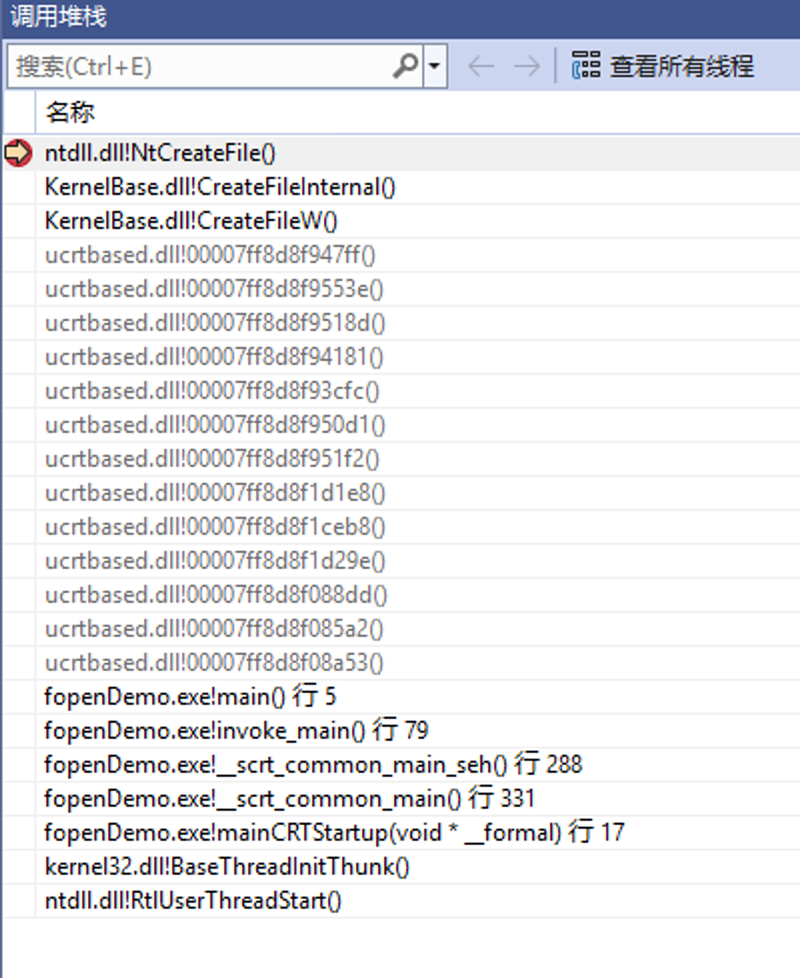

第一层：Standard Library (标准库层)#
例如：C语言中的
|
|
或者java中的：
|
|
第二层：Win32 API / Windows Subsystem (子系统层)#
这是微软官方提供给开发者的一套标准接口，通常位于 Kernel32.dll 、 User32.dll 等 DLL 中。 当 fopen 在 Windows 上运行时，它最终会调用：
CreateFileA("test.txt", ...); // 位于 Kernel32.dll第三层：Native API (原生 API 层)#
Kernel32.dll 中的 CreateFile 经过一系列检查后，会调用更底层的函数。这个函数位于 Ntdll.dll 中：
NtCreateFile(...);
// 或者 ZwCreateFileNtCreateFile 的核心任务只有两件事：
- 把 系统调用号 (SSN) 放进 EAX 寄存器（例如 Win10 上可能是 0x55 ）。
- 执行 syscall 指令（x64）或 sysenter 指令（x86）。
====== 跨越边界：用户态 (User Mode) -> 内核态 (Kernel Mode) ======#
执行 syscall 指令后，CPU 权限从 Ring 3 切换到 Ring 0。
第四层：System Service Dispatcher (系统服务分发层)#
CPU 切换到内核态后，会跳转到内核文件 ntoskrnl.exe 中的一个特定处理函数（通常是 KiSystemCall64 ）。它读取 EAX 中的号码（SSN），去查一张表—— SSDT (System Service Descriptor Table) ，根据号码找到对应的内核处理函数地址。
第五层：Kernel Executive (内核执行体层)#
SSDT 指向了真正的内核函数：
NtCreateFile(...); // 位于 ntoskrnl.exe，名字和 Ntdll 里的一样，但代码完全不同Visual Studio 调试fopen底层API#
配置 Visual Studio 调试环境#
- 去掉勾选启用"仅我的代码"

-
启用符号服务器
调试 (Debugging) -> 符号 (Symbols) -> 勾选 Microsoft 符号服务器 (Microsoft Symbol Servers) 。

1 2 3 4 5 6 7 8#define _CRT_SECURE_NO_WARNINGS #include <stdio.h> int main() { FILE* fp = fopen("test.txt", "w"); // 在这里下断点 if (fp) fclose(fp); return 0; }可以配置断点快速确认：


Ring 0层VS就无法看到了
底层函数在线查询网站#
- ReactOS Documentation
https://doxygen.reactos.org
-
Undocumented NT Internals